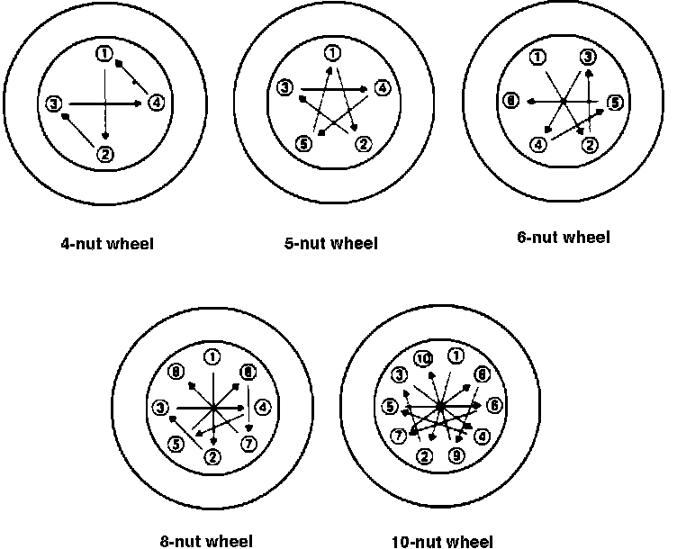

Wheel Fastener Tightening Sequence
Lug Nut Torque Patterns:

IMPORTANT
Check all parts, including rims, lug studs, lug nuts, and mating surfaces of hubs and tire rims for rust, damage, or dirt. Clean mating surfaces with a wire brush to remove any foreign material. Replace any damaged parts as needed. Careless installation of tire/rim assemblies in a vehicle is a major cause of tire installation problems. Proper installation, including fastener torque, is essential to economical, safe and trouble free service. Use only the proper sizes and types of fasteners for safe and proper service.
Tighten the fasteners a quarter turn at a time using the tightening sequence diagram as a guide. This is very important to prevent misalignment of the wheel. Continue tightening the fasteners in sequence until the fasteners are tightened to the proper torque (See WHEEL FASTENER TORQUE).
CAUTION: Improper torque or tightening sequence can cause distortion, fatigue cracks, or alignment problems. After driving the vehicle for a short distance, recheck the wheel fastener torque. Parts will usually seat naturally, reducing the torque on the fasteners. Retorque all fasteners to the proper torque.